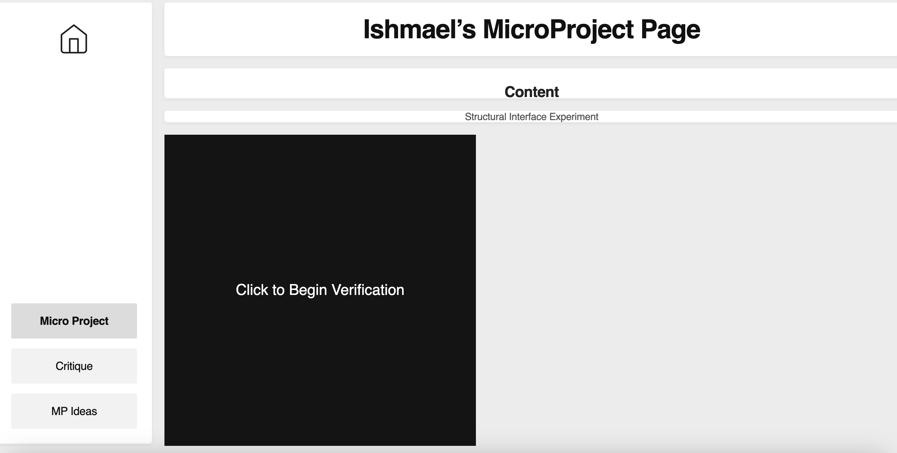
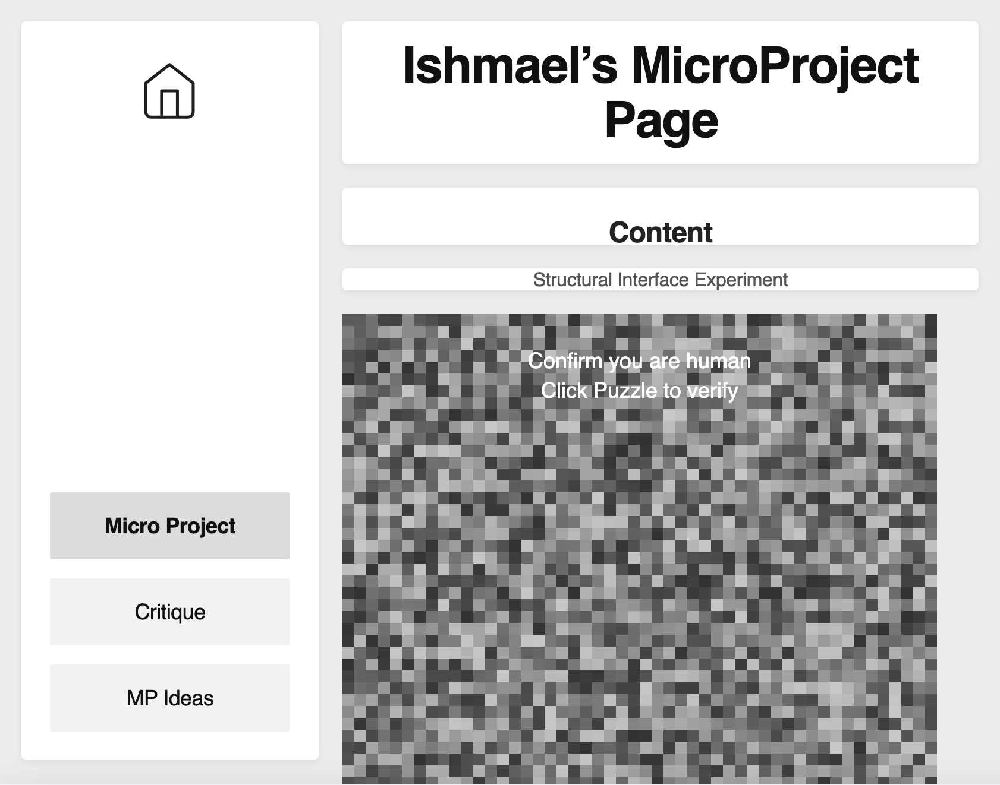

One thing that translated pretty cleanly from Figma into code was the overall visual structure and aesthetic of the interface. My original layout was designed like a desktop environment with a sidebar navigation, a main content window, a header, and a footer, and once I started rebuilding it in HTML and CSS, that logic still made sense structurally. After getting some inclass feedback, I used flexbox which actually helped simplify the organization because each section could become its own container instead of relying entirely on absolute positioning like the Figma export originally did. The sidebar translated especially well because it was already functioning like its own modular section in the design. Once I converted everything into flex containers, the layout started making more sense.
What broke the most was responsiveness and scaling. In Figma, everything looked correct because the artboard exists at a fixed size, so at first I thought the browser would keep those relationships automatically. Once I implemented the exported code, I realized the browser interprets layout very differently. The p5.js sketch especially became a problem because even though the JavaScript was technically embedded into the content window, the canvas sizing did not automatically adapt to the parent container. The sketch would overflow, scale incorrectly, or leave empty space inside the frame. I had to restructure the layout and use flexbox along with dynamic canvas resizing in JavaScript to get it to properly fit the content area.
Something that surprised me was how much HTML and CSS depend on hierarchy. In Figma, layers can visually overlap without much consequence because it is mainly a visual design tool.I was basically using Figma like Adobe Illustrator. In visual studio code every section depended on the structure around it. The code exposed how many assumptions I made about positioning. For example, I originally relied heavily on absolute positioning because that is what the Figma export generated, but once responsiveness became important, those decisions immediately started breaking the layout. Elements that looked visually aligned in Figma became disconnected or misaligned once the viewport size changed.
The code also exposed an important structural assumption in my interface design. I realized that my original design assumed the screen would behave like a fixed desktop canvas instead of a fluid system. Figma allowed me to think mostly in terms of composition and visual arrangement, while CSS forced me to think about flow, scaling, spacing, and responsiveness. HTML assumes a logical hierarchy where elements inherit structure and behavior from their containers, while CSS assumes layouts need to adapt dynamically to different screen sizes. Those assumptions collided with the rigid structure from the original Figma export.
If I had more time, I would refine the responsiveness further and make the interface behave more like an actual operating system or interactive desktop environment. Right now the mobile version works structurally, but I would spend more time improving how the navigation collapses and how the p5 sketch adapts across devices. I would also refine the visual consistency between the desktop and mobile versions and create smoother transitions between interface sections. Another thing I would revise is the interaction design itself. Now that the structure is more stable, I would want to introduce more motion, hover states, and interactive behaviors to reinforce the feeling of moving through a functional interface rather than just viewing static content. Overall, this process made me realize that designing in Figma is only one part of interface creation, while coding the system introduces an entirely different layer of structural thinking that forces the design to actually function in real space and across multiple devices.


